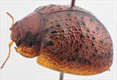
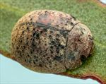
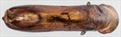
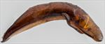
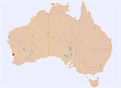

Click on images to enlarge
_SM.jpg){kind=link}

Male, Nilgen, S.W. Western Australia
{kind=link}

Male, Nilgen, S.W. Western Australia
{kind=link}

Aedeagus, dorsal view (Nilgen, S.W. Western Australia)
{kind=link}

Aedeagus, lateral view (Nilgen, S.W. Western Australia)
{kind=link}

Distribution
Name
Trachymela sp. Ta127
Reference specimen
2023-088, Nilgen, S.W. Western Australia
Adult Description
Length: ♀ ? mm [0], ♂ 6.0 mm [1].
Colour: head: uniformly light-brown, mandibles with dark-brown tips; labrum slightly paler; antennomeres uniformly straw-brown; pronotum: brown, darker than head, with a black patch on each side, behind the eyes, with its wider anterior edge a little in from pronotum anterior margin, narrowing towards posterior, with its posterior extreme a little in front of humeral callus and about as wide; scutellum: brown, similar shade to pronotum; elytra: brown, same shade as pronotum, with small, round, raised black tubercles scattered quite evenly over much of surface of disc except median depression, punctures slighly darker than interstices, humeral callus black; venter: thoracic ventrites and a patch just behind coxae on 1st abdominal segment black; head, abdominal ventrites and legs mid-brown; inside surface of elytral epipleura brown. Cuticular wax: a relatively uniform and moderately dense layer throughout, with the colour greyish brown on the pronotum and anterior half of elytra, grading to very slightly darker shade in posterior half.
Shape: rounded, greatest height viewed laterally is clearly in front of middle of elytral margin; Head; punctures moderately sized (pd~2xef), quite evenly and moderately densely packed. Antennae moderately long (AL ♂=37.7%BL, ♀=?%BL), filiform. Pronotum; almost evenly curved transversely with lateral margins not at all explanate, foveal depression very shallow with a poorly defined and almost round slighly elevated area near middle, puncturation clearly impressed, slightly coarser than those on head and rather evenly distributed in discal area, becoming much coarser from foveal depression to lateral margins, much finer and inconspicuous punctures scattered among them, interstices smooth in discal area. Thickened front margins smoothly join thinner lateral margins in a smoothly rounded right-angle, with lateral margin almost straight or barely curving for about 80% of length towards rear margin, then curving more strongly towards posterio-lateral angle, widest point at about 80% towards rear margin. Scutellum; smooth and shining, punctured, with punctures similar in size to those on pronotal disc but less clearly impressed. Elytra; surface evenly curved transversely over discal region, not noticeably explanate at margins, lightly curved longitudinally in anterior half, then more strongly curved, a very shallow depression extends across surface just in front of middle, punctures moderate-sized, distinct and relatively evenly distributed between the verrucae in anterior half of elytra, becoming more crowded and lost in the granular surface towards the apex, punctures similar in size or margin as on disc; small round verrucae, mostly unpunctured, but a few with a small puncture in centre, are scattered quite evenly over most of elytral surface except antero-median depression, with at least some verrucae present on each of VR1 to VR8; transversely, verrucae do not obviously align, except for just posterior to antero-median depression; some interstices form short transverse ridges most prominently between VR6 and VR9 in antero-median depression, surface continuous under humeral callus. Vertical extension of epipleura considerable (HCE/PW=0.40). Venter; Prosternal process relatively posteriorly, narrowing anteriorly, barely raised above the surface of the prosternum in anterior half, open anteriorly, short setae very sparsely distributed over prosternal process and mesosternum, a single seta on anterior and median trochanter; front edge of metasternum beveled, truncate; inner edge of epipleura lacking setae. Aedeagus; long (LPE=39.5%BL), linear, in dorsal view, slightly sinuous from basal sulcus to ostium, narrowing slighly from basal sulcus to near middle, then widening from there to widest point near rear of ostium (WPE = 0.24*LPE), from where sides converge smoothly towards apex, tip small and triangular, dorsal surface smooth, ostial depression well-defined, in shape of a long ellipse, with dorsal ostial processes narrowing and separating slightly from rear towards apex, reaching almost to apex; in lateral view, ventral surface bent about 1/3 of length from base, then almost straight to apex, tip prominently deflexed.
Larvae
unknown.
Eggs
unknown.
Notes
The only known specimen of this species was found on an unidentified Eucalyptus sp. Superficially, particularly in the arrangement of the verrucae on the elytra, this species closely resembles the eastern Australian species, Ta65. The prosternal process in the only specimen known is rather unusual for Trachymela, in that it appears to terminate well before the anterior edge of the prosternum.
Copyright © 2026. All rights reserved.